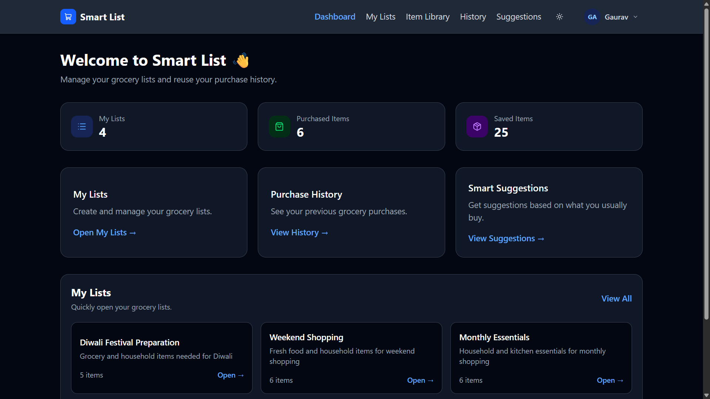
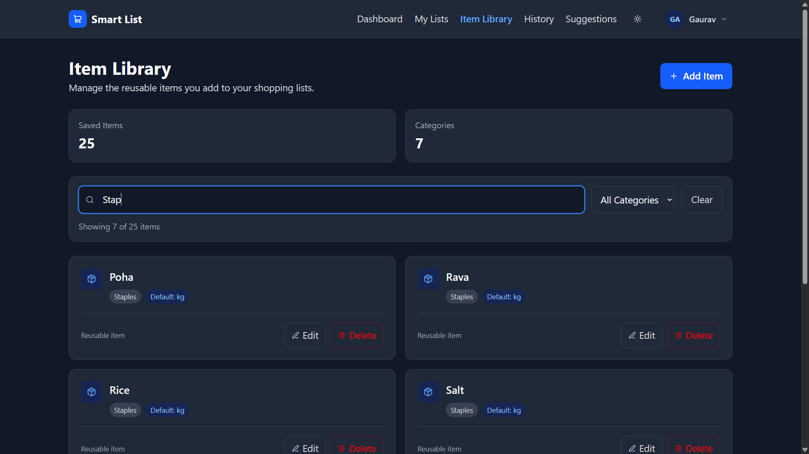
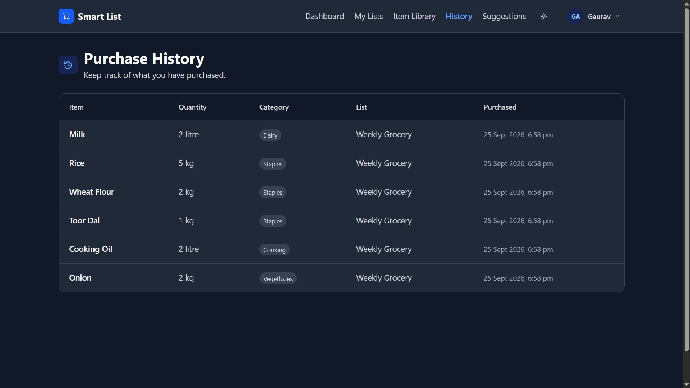
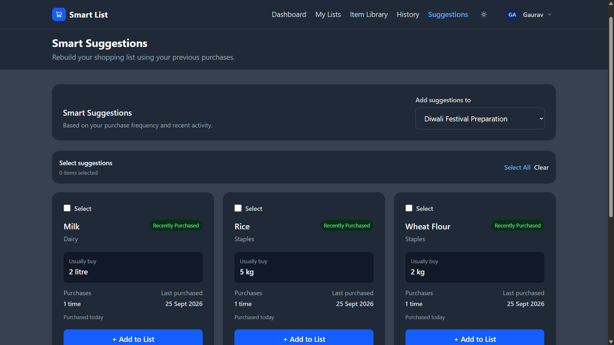
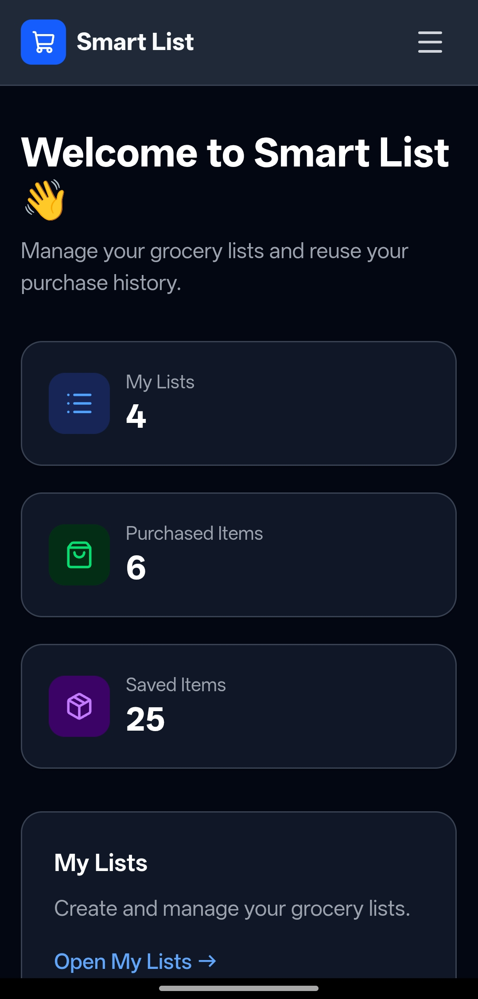
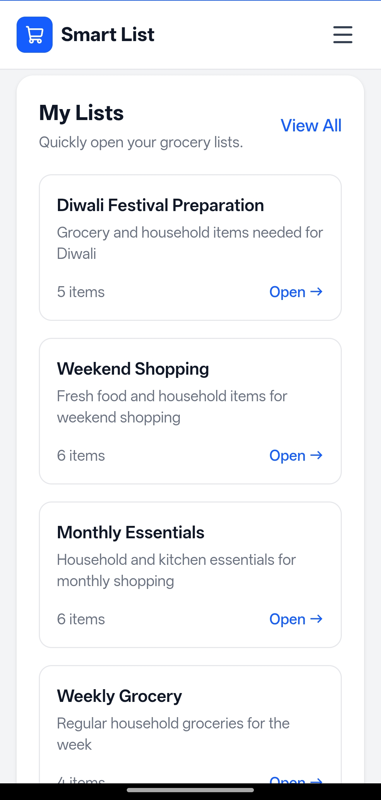
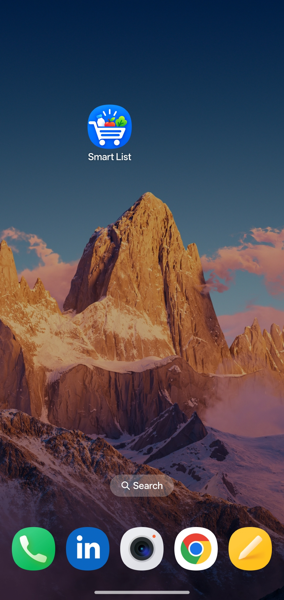

Shopping Lists
Create multiple lists for weekly, monthly or specific shopping requirements.
SMART LIST
Smart List is a web application designed to make recurring household shopping easier by combining reusable items, shopping lists, purchase tracking and purchase history.

01 — PRODUCT
Household shopping often involves buying many of the same items every week or month. Creating a new list from scratch makes a simple task repetitive and makes it easy to forget frequently purchased items.
Smart List allows users to maintain a reusable item library, create shopping lists, track purchases and use previous purchase activity when preparing future lists.
02 — WORKFLOW
The application is designed so that information from one shopping trip can be useful for the next one.
Maintain frequently purchased household items.
Select items and set quantities and units.
Track items while shopping and mark them purchased.
Completed purchases are stored for future reference.
Previous purchase activity helps prepare future lists.
03 — FEATURES
Create multiple lists for weekly, monthly or specific shopping requirements.
Keep a personal library of frequently purchased items and reuse them across lists.
Mark items as purchased while shopping and keep track of what is still remaining.
Keep a record of completed purchases and quantities for future reference.
Use previous purchase activity to identify items that may be useful for future shopping.
Use Smart List on mobile devices and install it as a Progressive Web App.
Choose between light and dark themes based on your preference.
Share shopping lists or print them when needed.
04 — PRODUCT EXPERIENCE
Smart List is responsive and can also be installed as a Progressive Web App.
Overview of shopping activity and lists.

Manage items and track purchases while shopping.

Search and reuse frequently purchased items.

Review previous shopping activity.

Use previous purchases when preparing new lists.
MOBILE
The responsive interface allows the application to be used comfortably on smaller screens, while PWA support allows it to be installed like a mobile application.



05 — TECHNOLOGY
React
Vite
Tailwind CSS
JavaScript
Supabase
PostgreSQL
Supabase Auth
Row Level Security
User-level data isolation
Authenticated access
Vercel
Progressive Web App
Vercel Analytics
Speed Insights
06 — ARCHITECTURE
07 — SECURITY
Smart List uses Supabase Authentication together with PostgreSQL Row Level Security to control access to application data.
08 — MY ROLE
Smart List was developed as a complete product project, covering both the user experience and the technical implementation.
Defined the use case, user flow and core product features.
Built the responsive interface and application workflows using React and Tailwind CSS.
Designed the application data structure using PostgreSQL and Supabase.
Implemented authentication and database-level access controls using Row Level Security.
Tested authentication, user isolation, shopping workflows, responsive layouts and PWA behaviour.
Deployed the application to Vercel and configured production authentication and monitoring.
09 — WHAT'S NEXT
Future development will depend on user feedback and how people actually use the application.
TRY THE PRODUCT
I'm currently interested in seeing how people use it and what could make it more useful.
Open Smart List